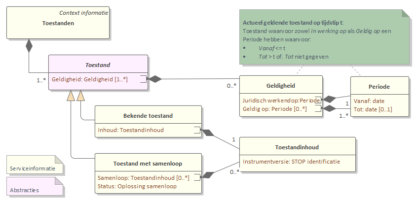

Scenario: bij publicatie van een besluit of bericht dat leidt tot nieuwe regelgeving
Dit scenario is een optie als alleen synchronisatie vereist is met de geldende regelgeving, en de gerelateerde informatie opgesteld of geverifieerd kan worden voordat een besluit (of ander bericht dat de geconsolideerde regelgeving wijzigt) gepubliceerd wordt.
Geldende versie van regelgeving
Bij publicatie is bekend op welke datum een nieuwe versie van de regelgeving de geldende versie wordt:
in geval van een besluit waarvan de inwerkingtredingsdatum bekend is: per datum inwerkingtreding (ook voor terugwerkende kracht);
in geval van een rectificatie: per datum van de publicatie;
in geval van het oplossen van consolidatieproblemen: per datum ontvangst;
in geval van het achteraf doorgeven van een (rechterlijke) interventie: per datum van de publicatie. Hierbij is ook bekend welke versie van een (geconsolideerde) regeling de geldende versie wordt, aangezien die in het besluit of bericht besloten ligt.
Uit het toestandsoverzicht dat de LVBB beschikbaar stelt (en dat ook bij een bevoegd gezag uit eigen berekening bekend kan zijn) is ook af te leiden welke toestanden in de toekomst een geldende versie gaan worden:

Zowel uit het toestandenoverzicht als (bij publicatie van een besluit of bericht) aan de hand van de validatie door de LVBB kan afgeleid worden of er sprake is van samenloop die nog opgelost moet worden.
Synchronisatie
De regelgeving-gerelateerde informatie wordt voorzien van de datum waarop een versie van de regelgeving voor het eerst geldig wordt. Systemen die de regelgeving-gerelateerde informatie gebruiken moeten die combineren met gegevens zoals ze op die datum gelden. Die systemen kunnen het toestandenoverzicht van de LVBB gebruiken om de dan geldende regelgeving te bepalen.
De ontvanger van de regelgeving-gerelateerde informatie kan niet verifiëren met welke regelgeving de informatie geassocieerd is. Het bevoegd gezag moet zorgen voor een proces waarbij de informatie en regelgeving in samenhang bijgewerkt worden. Daarbij dient ook rekening gehouden te worden met eventuele spoedbesluiten die in korte tijd opgesteld (soms in niet-publieke procedures) en bekendgemaakt worden en meteen in werking treden, zoals een voorbereidingsbesluit.
Deze methode van synchronisatie is niet geschikt voor proefconsolidaties, aangezien voor proefconsolidaties geen geldigheidsdatum bekend is.